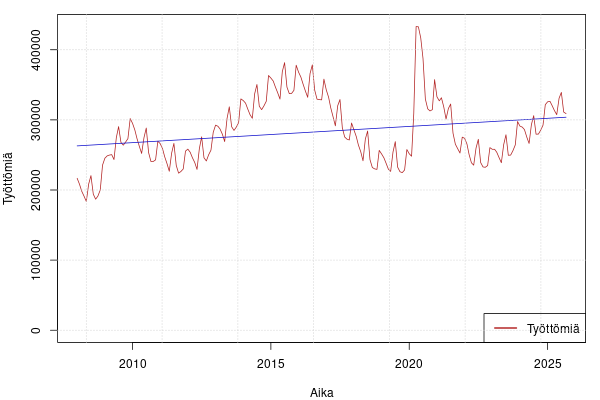
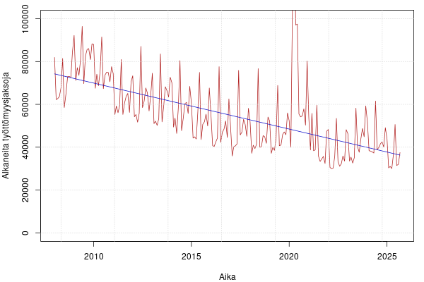
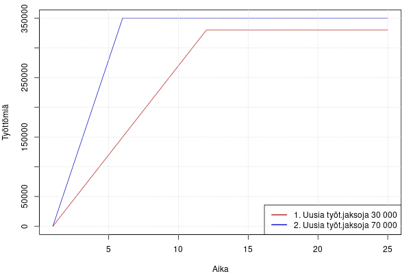
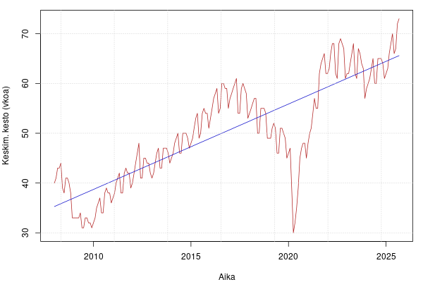
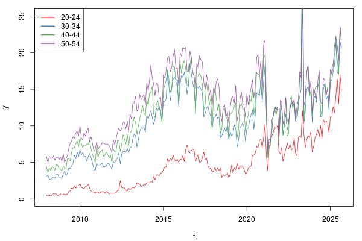

Mysteeri
Kuviossa 1. on esitetty työttömien määrä työnvälitystilaston mukaan. Kuviosta havaitaan, että tällä hetkellä työttömyys kasvaa, mutta työttömien määrä esim. n. 10 vuotta sitten ollut hieman suurempikin.
Kuvio 1. Työttömien määrä

Kuviossa 2. on puolestaan esitetty alkaneiden työttömyysjaksojen määrä. Y-akseli on katkaistu havainnollisuuden nimissä ("koronapiikki" on täysin poikkeuksellinen ja sotkee mittakaavan). Kuviosta nähdään, että alkaneiden työttömyysjaksojen määrän trendi on laskeva.
Kuvio 2. Alkaneet työttömyysjaksot ja trendi

Miksi alkaneiden työttömyysjaksojen määärä on ennätysmatala, mutta työttömien määrä on keskimäärin kasvanut?
Työttömyysjaksojen keston vaikutus työttömien määrään
Kuvitellaan kaksi eri skenaariota:
- Joka kuukausi alkaa 30 000 uutta työttömyysjaksoa. Jokainen jakso kestää 12 kuukautta.
- Joka kuukausi alkaa 70 000 uutta työttömyysjaksoa. Jokainen jakso kestää 6 kuukautta.
Kuviossa 2. on esitetty työttömien määrä kuvitteellisissa skenaariossa
Kuvio 2. Työttömien määrä kahdessa eri simulaatiossa

Kuviosta nähdään, että työttömien määrä asettuu jokseenkin samalle tasolle huolimatta hyvin erilaisista oletuksista! Pelkästään työttömien määrää tuijottamalla tätä ei kuitenkaan havaitsisi.
Kunkin kuukauden työttömien määrä onkin seuraavien tekijöiden funktio:
- Edellisen kuukauden työttömät
- Uudet työttömyysjaksot
- Päättyvät työttömyysjaksot
Alkaneita työttömyysjaksoja on vähemmän, mutta ne kestävät kauemmin
Kuviossa 4. on esitetty työttömyysjaksojen keskimääräinen kesto viikoissa. Kuviosta nähdään, että keskimääräinen keston trendi on kasvava. Työttömyyden keskimääräinen kesto on nyt pidempi kuin koskaan työnvälitystilaston mittausaikana (vuodesta 2008 eespäin).
Kuvio 4. Työttömyyden keskimääräinen kesto viikoissa ja trendi

Ennätyspitkiä työttömyysjaksoja voi selittää se, että työvoimapalvelut siirtyivät työllisyysalueille, jotka eivät ole järjestäneet niin paljon työvoimapoliittisia palveluita. Työnvälitystilastossa työttömyyden katkaisee osallistuminen tiettyihin työvoimapoliittisiin palveluihin.
Tällä hetkellä ei tiedetä, missä määrin ennätyspitkät työttömyysjaksot johtuvat työttömyyden pitkittymisestä ja toisaalta työvoimapoliittisten palveluiden järjestämisen muutoksista. Tätä varten tarvitsisi tilastoida työttömyyden kesto siten, että palvelujaksot eivät katkaise työttömyyttä.
Keiden työttömyysjaksot ovat pidentyneet?
Tiedetään siis, että jaksot ovat pidentyneet yleisesti, mutta onko joidenkin tiettyjen työnhakijaryhmien jaksot pidentyneet muita enemmän?
Yksi tapa tarkastella asiaa on tutkia kuinka suuri osuus alkaneista työttömyysjaksoista jatkuu yli 12kk (kuvio 5).
Kuvio 5. Alkaneista työttömyysjaksoista jatkunut yli 12kk, %

Kuviosta 5. havaitaan, että suurin muutos on tapahtunut nuorilla. Vuonna 2015 20-24-v. alkaneista työttömyysjaksoista keskimäärin noin viisi prosenttia kesti vähintään vuoden. Vuonna 2025 vastaava osuus on lähes kolminkertainen (14%).